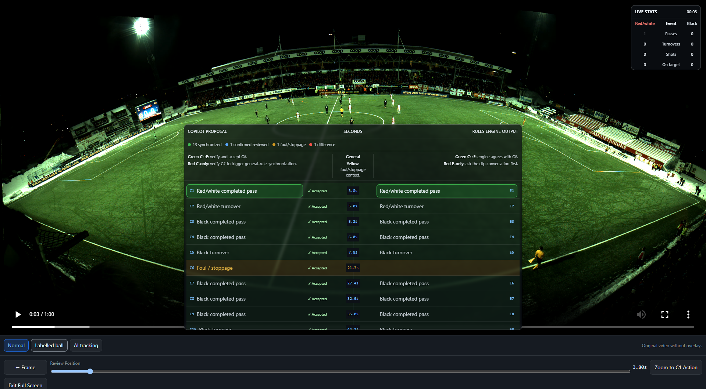
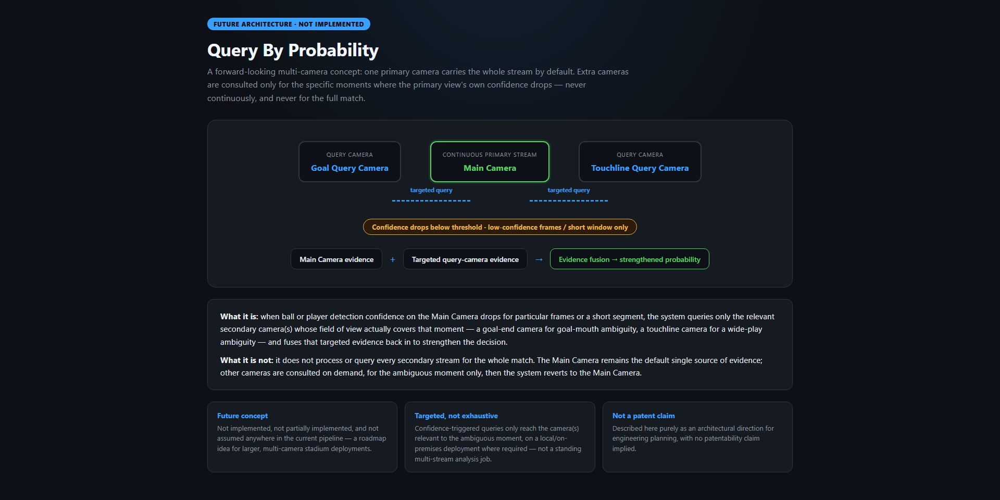

Control the evidence
Prepare a focused 30–60 second window instead of treating a full match as one opaque run.
Evidence before statistics
A local-first football intelligence platform that segments match video, detects candidate events, applies documented rules, and lets Copilot independently review the evidence before statistics become trusted.

Current platform
The rules engine and Copilot share definitions, not answers. Each conclusion must remain supported by the selected video and match-state evidence.
Prepare a focused 30–60 second window instead of treating a full match as one opaque run.
Tracking, possession, match state, and analytics definitions produce reproducible E# events.
Copilot creates C# proposals from targeted evidence without using the engine event as its answer.
Only reviewed decisions, matching fingerprints, and protected regressions can publish and lock a segment.
Query By Probability
One strong primary camera handles the continuous match. When ball, player, or event confidence drops, the platform queries only the relevant frames from goal-end or touchline cameras, then fuses those observations to strengthen the decision. Secondary streams are not processed continuously.

Xebia Innovation Day
Open the branded story, current demonstration, landscape board, and developer guide. The purple review experience changes presentation—not football logic.